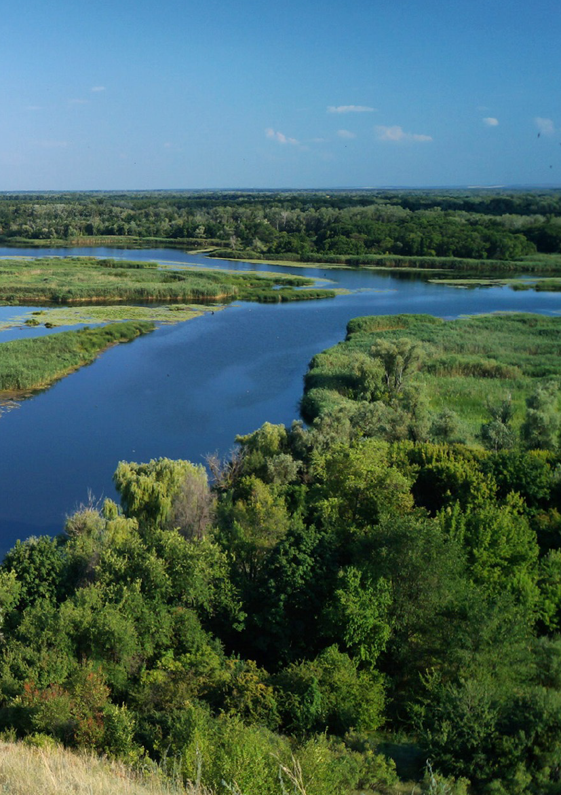

Тематики
Карта досліджень
Іконки — місця спостережень за тематиками. Клікніть, щоб відкрити статтю.
Останні спостереження
Усі статті
Нове спостереження
Після збереження стаття з’явиться одразу у вас. Якщо налаштовано GitHub-токен — вона автоматично опублікується для всіх.
Налаштування куратора
🚀 Автопублікація на GitHub
Щоб статті з’являлись на сайті для всіх без ручного завантаження — додайте Personal Access Token.
- Відкрийте github.com/settings/tokens
- Generate new token (classic) → поставте галочку repo
- Скопіюйте токен і вставте нижче
🎨 Тематики статей
Додавайте свої тематики та обирайте іконки. Вони з’являться кнопками на головній і в каталозі.
🖼 Обкладинка головної
📦 Резервна копія
Про проєкт

Дикі річки України — енциклопедія та архів польових спостережень водного світу.
Куратор може додавати статті з телефону, обирати тематики, ставити геолокацію та автоматично публікувати їх на сайті.
Встановити на телефон
Android: меню ⋮ → «Встановити застосунок»
iPhone: Поділитися → «На екран Додому»